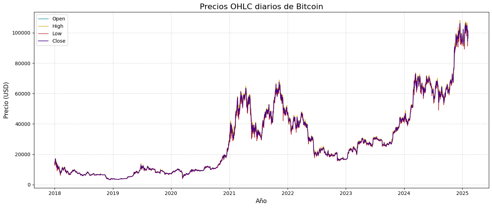
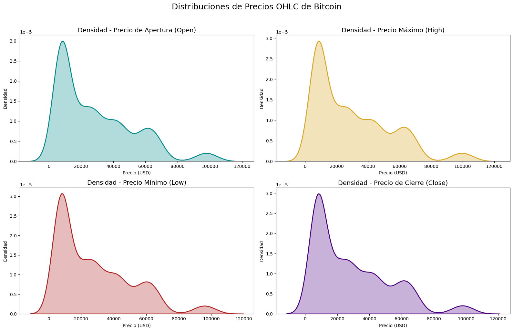
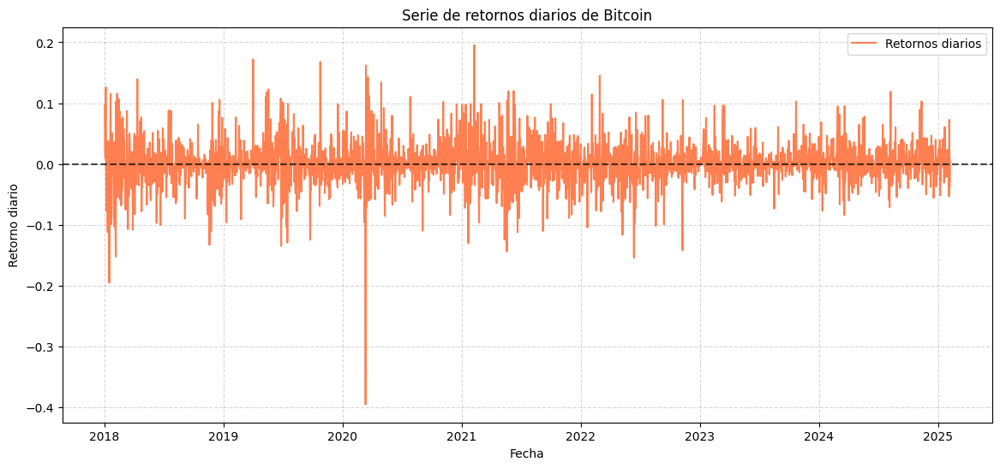
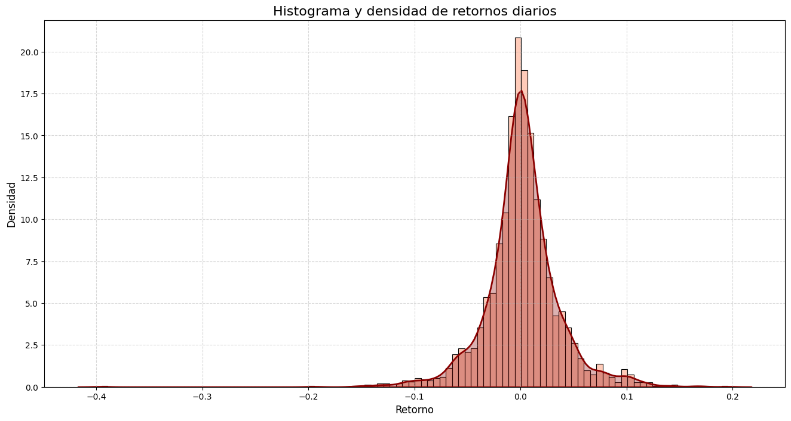
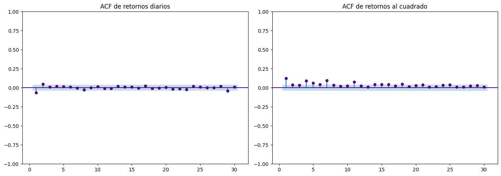
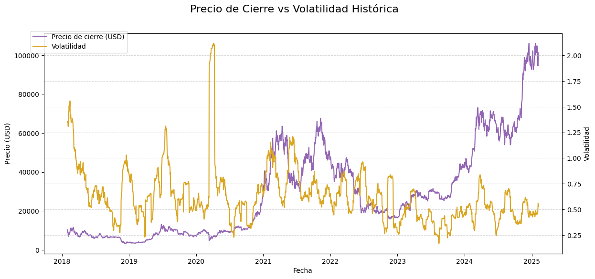
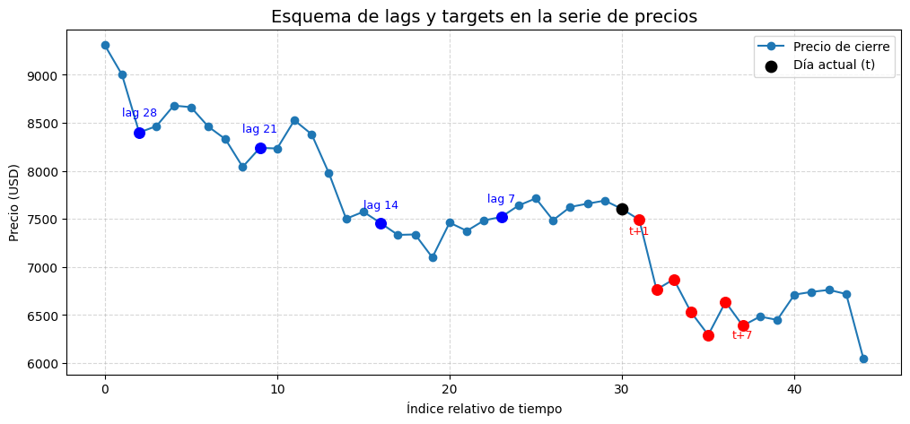

Proyecto Integrador de Deep Learning #2#
Show code cell content
btc = pd.read_csv(r'Data\btc_1d_data_2018_to_2025.csv')
btc['Open time'] = pd.to_datetime(btc['Open time'], format='%Y-%m-%d')
#eliminar columna ignore
btc = btc.drop(columns=['Ignore'])
Análisis Exploratorio de Datos#




Show code cell source
# Estadísticas descriptivas de precios OHLC
desc_precios = btc[["Open", "High", "Low", "Close"]].describe().T
# Estadísticas descriptivas de retornos
desc_rets = btc["return"].describe()
# Extra: skewness y kurtosis de retornos
extra_stats = pd.Series({
"skewness": btc["return"].skew(),
"kurtosis": btc["return"].kurt()
}, name="Retornos")
# Unir todo en un DataFrame ordenado
stats_df = desc_precios.copy()
stats_df_rets = pd.DataFrame(desc_rets).T
stats_df_rets.index = ["Retornos"]
# Agregar skew y kurtosis
stats_df_rets = pd.concat([stats_df_rets, extra_stats.to_frame().T])
# Concatenar precios + retornos
final_stats = pd.concat([stats_df, stats_df_rets], axis=0)
final_stats
| count | mean | std | min | 25% | 50% | 75% | max | skewness | kurtosis | |
|---|---|---|---|---|---|---|---|---|---|---|
| Open | 2594.0 | 29057.847182 | 23539.635421 | 3211.710000 | 9067.985000 | 22712.950000 | 43484.365000 | 106143.820000 | NaN | NaN |
| High | 2594.0 | 29743.249383 | 24046.515394 | 3276.500000 | 9261.240000 | 23252.895000 | 44293.657500 | 108353.000000 | NaN | NaN |
| Low | 2594.0 | 28327.995451 | 23021.304519 | 3156.260000 | 8765.000000 | 22257.575000 | 42487.500000 | 105321.490000 | NaN | NaN |
| Close | 2594.0 | 29090.193446 | 23576.229505 | 3211.720000 | 9068.840000 | 22741.115000 | 43527.390000 | 106143.820000 | NaN | NaN |
| Retornos | 2593.0 | 0.001418 | 0.035720 | -0.395048 | -0.014071 | 0.000708 | 0.016437 | 0.195361 | NaN | NaN |
| Retornos | NaN | NaN | NaN | NaN | NaN | NaN | NaN | NaN | -0.392546 | 8.717892 |

Preprocesamiento y cálculo de features#
Cálculo de retornos logarítmicos (ingresar formula)
Show code cell source
# Retornos logarítmicos
btc["LogReturn"] = np.log(btc["Close"] / btc["Close"].shift(1))
# Vista rápida
btc = btc[["Open time", "Close", "LogReturn"]].dropna().reset_index(drop=True)
Cálculo de volatilidad histórica (rolling std) (ingresar formúla)
Show code cell source
# Volatilidad móvil de 30 días
btc["Volatility"] = btc["LogReturn"].rolling(window=30).std() * np.sqrt(365)
btc = btc.dropna().reset_index(drop=True)
y_full = btc['Close'].values
volatility_full = btc['Volatility'].values
# Vista rápida
btc[["Open time", 'Close',"LogReturn", 'Volatility']].head()
| Open time | Close | LogReturn | Volatility | |
|---|---|---|---|---|
| 0 | 2018-01-31 | 10285.10 | 0.004638 | 1.355575 |
| 1 | 2018-02-01 | 9224.52 | -0.108831 | 1.348263 |
| 2 | 2018-02-02 | 8873.03 | -0.038849 | 1.345556 |
| 3 | 2018-02-03 | 9199.96 | 0.036183 | 1.355471 |
| 4 | 2018-02-04 | 8184.81 | -0.116919 | 1.307933 |

Generación del lags del precio
# Crear lags de precio de cierre
for lag in [7, 14, 21, 28]:
btc[f"Close_lag_{lag}"] = btc["Close"].shift(lag)
btc[[ "Open time", "Close", "Close_lag_7", "Close_lag_14", "Close_lag_21", "Close_lag_28"]].head(35)
| Open time | Close | Close_lag_7 | Close_lag_14 | Close_lag_21 | Close_lag_28 | |
|---|---|---|---|---|---|---|
| 0 | 2018-01-31 | 10285.10 | NaN | NaN | NaN | NaN |
| 1 | 2018-02-01 | 9224.52 | NaN | NaN | NaN | NaN |
| 2 | 2018-02-02 | 8873.03 | NaN | NaN | NaN | NaN |
| 3 | 2018-02-03 | 9199.96 | NaN | NaN | NaN | NaN |
| 4 | 2018-02-04 | 8184.81 | NaN | NaN | NaN | NaN |
| 5 | 2018-02-05 | 6939.99 | NaN | NaN | NaN | NaN |
| 6 | 2018-02-06 | 7652.14 | NaN | NaN | NaN | NaN |
| 7 | 2018-02-07 | 7599.00 | 10285.10 | NaN | NaN | NaN |
| 8 | 2018-02-08 | 7784.02 | 9224.52 | NaN | NaN | NaN |
| 9 | 2018-02-09 | 8683.92 | 8873.03 | NaN | NaN | NaN |
| 10 | 2018-02-10 | 8533.98 | 9199.96 | NaN | NaN | NaN |
| 11 | 2018-02-11 | 8063.88 | 8184.81 | NaN | NaN | NaN |
| 12 | 2018-02-12 | 8903.00 | 6939.99 | NaN | NaN | NaN |
| 13 | 2018-02-13 | 8539.90 | 7652.14 | NaN | NaN | NaN |
| 14 | 2018-02-14 | 9449.99 | 7599.00 | 10285.10 | NaN | NaN |
| 15 | 2018-02-15 | 10000.09 | 7784.02 | 9224.52 | NaN | NaN |
| 16 | 2018-02-16 | 10159.98 | 8683.92 | 8873.03 | NaN | NaN |
| 17 | 2018-02-17 | 11039.55 | 8533.98 | 9199.96 | NaN | NaN |
| 18 | 2018-02-18 | 10383.43 | 8063.88 | 8184.81 | NaN | NaN |
| 19 | 2018-02-19 | 11153.00 | 8903.00 | 6939.99 | NaN | NaN |
| 20 | 2018-02-20 | 11200.99 | 8539.90 | 7652.14 | NaN | NaN |
| 21 | 2018-02-21 | 10437.60 | 9449.99 | 7599.00 | 10285.10 | NaN |
| 22 | 2018-02-22 | 9811.04 | 10000.09 | 7784.02 | 9224.52 | NaN |
| 23 | 2018-02-23 | 10131.04 | 10159.98 | 8683.92 | 8873.03 | NaN |
| 24 | 2018-02-24 | 9694.51 | 11039.55 | 8533.98 | 9199.96 | NaN |
| 25 | 2018-02-25 | 9590.00 | 10383.43 | 8063.88 | 8184.81 | NaN |
| 26 | 2018-02-26 | 10324.00 | 11153.00 | 8903.00 | 6939.99 | NaN |
| 27 | 2018-02-27 | 10569.04 | 11200.99 | 8539.90 | 7652.14 | NaN |
| 28 | 2018-02-28 | 10326.76 | 10437.60 | 9449.99 | 7599.00 | 10285.10 |
| 29 | 2018-03-01 | 10920.00 | 9811.04 | 10000.09 | 7784.02 | 9224.52 |
| 30 | 2018-03-02 | 11039.00 | 10131.04 | 10159.98 | 8683.92 | 8873.03 |
| 31 | 2018-03-03 | 11464.48 | 9694.51 | 11039.55 | 8533.98 | 9199.96 |
| 32 | 2018-03-04 | 11515.00 | 9590.00 | 10383.43 | 8063.88 | 8184.81 |
| 33 | 2018-03-05 | 11454.00 | 10324.00 | 11153.00 | 8903.00 | 6939.99 |
| 34 | 2018-03-06 | 10716.48 | 10569.04 | 11200.99 | 8539.90 | 7652.14 |
Generación de targets multi-step (7 días)
# Crear targets multi-step (7 días hacia adelante)
horizon = 7
for h in range(1, horizon+1):
btc[f"target_t+{h}"] = btc["Close"].shift(-h)
btc[[ "Open time", "Close"] + [f"target_t+{h}" for h in range(1, horizon+1)]].head(15)
| Open time | Close | target_t+1 | target_t+2 | target_t+3 | target_t+4 | target_t+5 | target_t+6 | target_t+7 | |
|---|---|---|---|---|---|---|---|---|---|
| 0 | 2018-01-31 | 10285.10 | 9224.52 | 8873.03 | 9199.96 | 8184.81 | 6939.99 | 7652.14 | 7599.00 |
| 1 | 2018-02-01 | 9224.52 | 8873.03 | 9199.96 | 8184.81 | 6939.99 | 7652.14 | 7599.00 | 7784.02 |
| 2 | 2018-02-02 | 8873.03 | 9199.96 | 8184.81 | 6939.99 | 7652.14 | 7599.00 | 7784.02 | 8683.92 |
| 3 | 2018-02-03 | 9199.96 | 8184.81 | 6939.99 | 7652.14 | 7599.00 | 7784.02 | 8683.92 | 8533.98 |
| 4 | 2018-02-04 | 8184.81 | 6939.99 | 7652.14 | 7599.00 | 7784.02 | 8683.92 | 8533.98 | 8063.88 |
| 5 | 2018-02-05 | 6939.99 | 7652.14 | 7599.00 | 7784.02 | 8683.92 | 8533.98 | 8063.88 | 8903.00 |
| 6 | 2018-02-06 | 7652.14 | 7599.00 | 7784.02 | 8683.92 | 8533.98 | 8063.88 | 8903.00 | 8539.90 |
| 7 | 2018-02-07 | 7599.00 | 7784.02 | 8683.92 | 8533.98 | 8063.88 | 8903.00 | 8539.90 | 9449.99 |
| 8 | 2018-02-08 | 7784.02 | 8683.92 | 8533.98 | 8063.88 | 8903.00 | 8539.90 | 9449.99 | 10000.09 |
| 9 | 2018-02-09 | 8683.92 | 8533.98 | 8063.88 | 8903.00 | 8539.90 | 9449.99 | 10000.09 | 10159.98 |
| 10 | 2018-02-10 | 8533.98 | 8063.88 | 8903.00 | 8539.90 | 9449.99 | 10000.09 | 10159.98 | 11039.55 |
| 11 | 2018-02-11 | 8063.88 | 8903.00 | 8539.90 | 9449.99 | 10000.09 | 10159.98 | 11039.55 | 10383.43 |
| 12 | 2018-02-12 | 8903.00 | 8539.90 | 9449.99 | 10000.09 | 10159.98 | 11039.55 | 10383.43 | 11153.00 |
| 13 | 2018-02-13 | 8539.90 | 9449.99 | 10000.09 | 10159.98 | 11039.55 | 10383.43 | 11153.00 | 11200.99 |
| 14 | 2018-02-14 | 9449.99 | 10000.09 | 10159.98 | 11039.55 | 10383.43 | 11153.00 | 11200.99 | 10437.60 |
btc = btc.dropna().reset_index(drop=True)
btc.head(15)
| Open time | Close | LogReturn | Volatility | Close_lag_7 | Close_lag_14 | Close_lag_21 | Close_lag_28 | target_t+1 | target_t+2 | target_t+3 | target_t+4 | target_t+5 | target_t+6 | target_t+7 | |
|---|---|---|---|---|---|---|---|---|---|---|---|---|---|---|---|
| 0 | 2018-02-28 | 10326.76 | -0.023190 | 1.370991 | 10437.60 | 9449.99 | 7599.00 | 10285.10 | 10920.00 | 11039.00 | 11464.48 | 11515.00 | 11454.00 | 10716.48 | 9910.00 |
| 1 | 2018-03-01 | 10920.00 | 0.055857 | 1.344643 | 9811.04 | 10000.09 | 7784.02 | 9224.52 | 11039.00 | 11464.48 | 11515.00 | 11454.00 | 10716.48 | 9910.00 | 9271.64 |
| 2 | 2018-03-02 | 11039.00 | 0.010838 | 1.344961 | 10131.04 | 10159.98 | 8683.92 | 8873.03 | 11464.48 | 11515.00 | 11454.00 | 10716.48 | 9910.00 | 9271.64 | 9227.00 |
| 3 | 2018-03-03 | 11464.48 | 0.037819 | 1.288457 | 9694.51 | 11039.55 | 8533.98 | 9199.96 | 11515.00 | 11454.00 | 10716.48 | 9910.00 | 9271.64 | 9227.00 | 8770.22 |
| 4 | 2018-03-04 | 11515.00 | 0.004397 | 1.277770 | 9590.00 | 10383.43 | 8063.88 | 8184.81 | 11454.00 | 10716.48 | 9910.00 | 9271.64 | 9227.00 | 8770.22 | 9533.57 |
| 5 | 2018-03-05 | 11454.00 | -0.005312 | 1.274726 | 10324.00 | 11153.00 | 8903.00 | 6939.99 | 10716.48 | 9910.00 | 9271.64 | 9227.00 | 8770.22 | 9533.57 | 9131.34 |
| 6 | 2018-03-06 | 10716.48 | -0.066556 | 1.224051 | 10569.04 | 11200.99 | 8539.90 | 7652.14 | 9910.00 | 9271.64 | 9227.00 | 8770.22 | 9533.57 | 9131.34 | 9150.00 |
| 7 | 2018-03-07 | 9910.00 | -0.078238 | 1.099999 | 10326.76 | 10437.60 | 9449.99 | 7599.00 | 9271.64 | 9227.00 | 8770.22 | 9533.57 | 9131.34 | 9150.00 | 8170.00 |
| 8 | 2018-03-08 | 9271.64 | -0.066584 | 1.087877 | 10920.00 | 9811.04 | 10000.09 | 7784.02 | 9227.00 | 8770.22 | 9533.57 | 9131.34 | 9150.00 | 8170.00 | 8240.98 |
| 9 | 2018-03-09 | 9227.00 | -0.004826 | 1.087572 | 11039.00 | 10131.04 | 10159.98 | 8683.92 | 8770.22 | 9533.57 | 9131.34 | 9150.00 | 8170.00 | 8240.98 | 8260.00 |
| 10 | 2018-03-10 | 8770.22 | -0.050772 | 1.103545 | 11464.48 | 9694.51 | 11039.55 | 8533.98 | 9533.57 | 9131.34 | 9150.00 | 8170.00 | 8240.98 | 8260.00 | 7824.80 |
| 11 | 2018-03-11 | 9533.57 | 0.083457 | 1.075711 | 11515.00 | 9590.00 | 10383.43 | 8063.88 | 9131.34 | 9150.00 | 8170.00 | 8240.98 | 8260.00 | 7824.80 | 8189.99 |
| 12 | 2018-03-12 | 9131.34 | -0.043107 | 1.085569 | 11454.00 | 10324.00 | 11153.00 | 8903.00 | 9150.00 | 8170.00 | 8240.98 | 8260.00 | 7824.80 | 8189.99 | 8600.00 |
| 13 | 2018-03-13 | 9150.00 | 0.002041 | 1.064578 | 10716.48 | 10569.04 | 11200.99 | 8539.90 | 8170.00 | 8240.98 | 8260.00 | 7824.80 | 8189.99 | 8600.00 | 8909.98 |
| 14 | 2018-03-14 | 8170.00 | -0.113285 | 1.084025 | 9910.00 | 10326.76 | 10437.60 | 9449.99 | 8240.98 | 8260.00 | 7824.80 | 8189.99 | 8600.00 | 8909.98 | 8885.00 |
Show code cell source
# Ejemplo: fila intermedia (para que existan lags y targets)
i = 100
ventana_lags = [7, 14, 21, 28]
horizon = 7
# Extraemos un rango de precios alrededor
context = btc["Close"].iloc[i-30:i+15].reset_index(drop=True)
plt.figure(figsize=(12,5))
plt.plot(context, marker="o", label="Precio de cierre")
# Punto actual
plt.scatter(30, context.iloc[30], color="black", s=80, zorder=3, label="Día actual (t)")
# Marcar lags
for lag in ventana_lags:
idx = 30 - lag
plt.scatter(idx, context.iloc[idx], color="blue", s=70, zorder=3)
plt.text(idx, context.iloc[idx]*1.02, f"lag {lag}", fontsize=9, color="blue", ha="center")
# Marcar targets futuros
for h in range(1, horizon+1):
idx = 30 + h
plt.scatter(idx, context.iloc[idx], color="red", s=70, zorder=3)
if h in [1, 7]: # mostrar algunos para no saturar
plt.text(idx, context.iloc[idx]*0.98, f"t+{h}", fontsize=9, color="red", ha="center")
plt.title("Esquema de lags y targets en la serie de precios", fontsize=14)
plt.xlabel("Índice relativo de tiempo")
plt.ylabel("Precio (USD)")
plt.legend()
plt.grid(True, linestyle="--", alpha=0.5)
plt.show()
